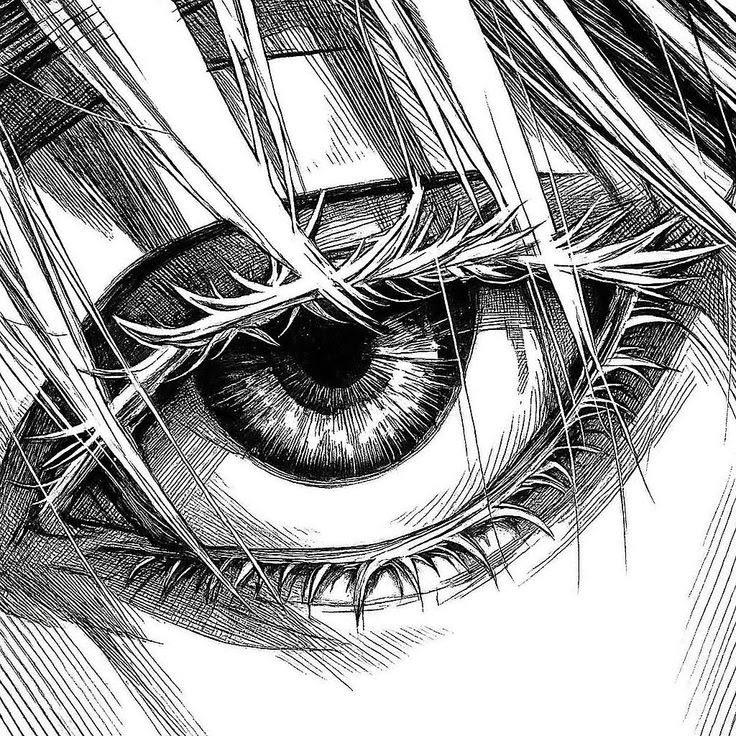

Objectives
Espacio reservado para agregar los objetivos cuando se defina su contenido.
La realidad detrás de la pantalla
Una mirada escolar a la inteligencia artificial, las redes sociales y la cultura digital: preguntas para entender cómo se relacionan con nuestras decisiones y la vida cotidiana.

Secciones preparadas para completar cuando estén listos los contenidos.
Grupo 1 · Institucional
Presentación del proyecto y sus apartados institucionales.
Espacio reservado para agregar los objetivos cuando se defina su contenido.
Grupo 2 · Inglés
Espacio reservado para el trabajo principal sobre inteligencia artificial.
Mapa mental sobre las redes sociales.
 Imagen de referencia · Unsplash
Imagen de referencia · Unsplash
Dos espacios para agregar los delitos cibernéticos seleccionados y su mapa mental o diseño.
 Imagen de referencia · Unsplash
Imagen de referencia · Unsplash
Nombre y diseño por agregar.
Nombre y diseño por agregar.
Comparación entre los beneficios y las desventajas de la inteligencia artificial.

Contenido por agregar.
Contenido por agregar.

Espacio reservado para su tesis individual.

Espacio reservado para su tesis individual.

Espacio reservado para su tesis individual.
Espacio reservado para su tesis individual.

Espacio reservado para su tesis individual.
Grupo 3 · Español
Influencers · Mapa mental
Un recorrido visual por temas clave: medioambiente, desarrollo personal y educación financiera.
Espacio reservado para el párrafo introductorio de la página.
Espacio reservado para completar este texto escolar.
Espacio reservado para completar este texto escolar.
Sobre nosotros
Más allá del feed es un proyecto escolar de información y análisis que explora la relación entre la tecnología, los medios digitales y la sociedad. Busca ir más allá de lo que vemos en las pantallas, examinando las ideas, los impactos y las preguntas que surgen de nuestra vida digital.
Aquí conviven explicaciones generales, preguntas para el debate y noticias enlazadas a sus fuentes originales. Las imágenes de apoyo se identifican como ilustrativas y no se presentan como fotografías de los acontecimientos.

Informar, analizar y generar conciencia sobre el impacto de la tecnología en la sociedad mediante contenidos de calidad que promuevan el pensamiento crítico, la reflexión y el diálogo.
Ser un referente digital en la construcción de una comunidad informada, crítica y consciente, que comprenda el poder de la tecnología y la utilice para construir un mejor futuro.
Basarnos en hechos y fuentes verificables, evitando presentar rumores como información confirmada.
Cuestionar la información, examinar argumentos y contrastar diferentes perspectivas.
Reconocer diferentes opiniones y tratar los temas y las personas con responsabilidad.
Explorar nuevas formas de comunicar, investigar y comprender las historias.
Selección editorial
Una selección de publicaciones sobre inteligencia artificial, plataformas digitales, ciberseguridad y su impacto social. Cada tarjeta conduce al artículo original para consultar su contexto y los detalles en la fuente.
Cargando la selección de noticias…
Temas para explorar
Tecnología y sociedad
La inteligencia artificial, las plataformas y los medios digitales pueden analizarse desde distintas perspectivas: quién los diseña, para qué se usan y qué preguntas plantean sobre privacidad, trabajo, creatividad y convivencia.
Explorar el mapa de conexionesLas plataformas, la inteligencia artificial, la cultura y la economía no son fragmentos aislados: forman parte del mismo tejido de la vida cotidiana.
Explora seis dimensiones conectadas. Selecciona una para leer su descripción; las líneas expresan relaciones temáticas, no datos ni relaciones cuantitativas.
Voces y perspectivas
Cuando la información se curva a nuestro comportamiento, ¿seguimos construyendo nuestra propia verdad?
Preguntarse quién publica, qué evidencia ofrece y qué información falta ayuda a distinguir datos, interpretaciones y opiniones.
¿Cómo equilibrar nuevas posibilidades tecnológicas con el cuidado de la información personal?
Una pregunta abierta sobre cambios en el trabajo, el acceso a herramientas y la distribución de oportunidades.